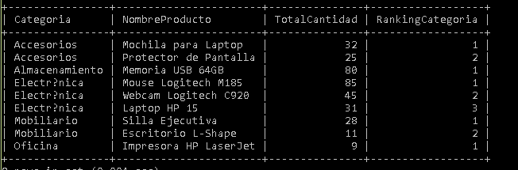

Código SQL
WITH VentasPorProducto AS (
SELECT
pr.ProductoID,
pr.NombreProducto,
pr.Categoria,
SUM(dp.Cantidad) AS TotalVendido
FROM Productos pr
INNER JOIN DetallesPedido dp
ON pr.ProductoID = dp.ProductoID
INNER JOIN Pedidos p
ON dp.PedidoID = p.PedidoID
WHERE p.Estado = 'Entregado'
GROUP BY pr.ProductoID, pr.NombreProducto, pr.Categoria
)
SELECT
Categoria,
NombreProducto,
TotalVendido,
DENSE_RANK() OVER (
PARTITION BY Categoria
ORDER BY TotalVendido DESC
) AS RankingCategoria
FROM VentasPorProducto;
Resultado de la Consulta
En esta sección se coloca la captura del resultado obtenido al ejecutar la consulta en MySQL, mostrando el ranking de los productos más vendidos por cada categoría.
